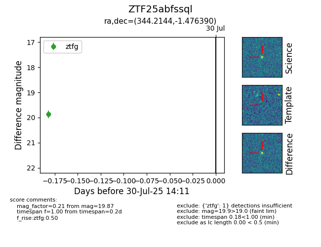

Target ZTF25abfssql at 2025-07-30 14:11, see:
FINK: fink-portal.org/ZTF25abfssql
Lasair: lasair-ztf.lsst.ac.uk/objects/ZTF25abfssql
ALeRCE: alerce.online/object/ZTF25abfssql
alt names
ZTF25abfssql (ztf,fink)
coordinates:
equatorial (ra, dec) = (344.2144,-1.47639)
galactic (l, b) = (71.1319,-52.42428)
photometry
last ztfg=19.87
1 ztfg detections
